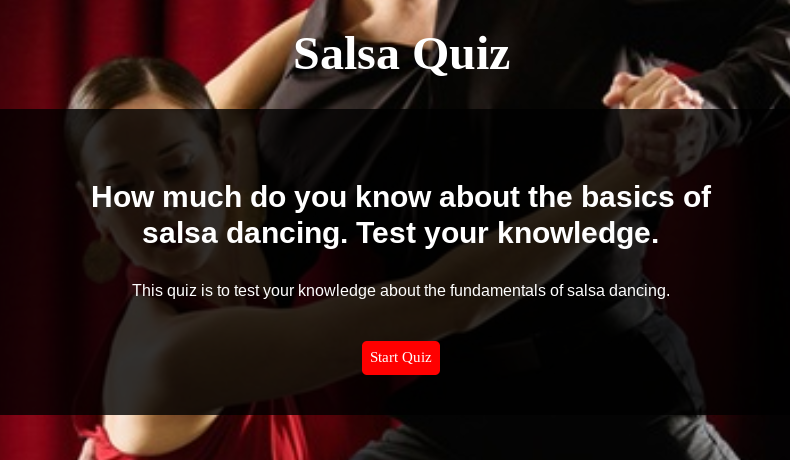

About Me

Hi! My name is Yajaira Flynn-Corbin. How you pronounce that you ask? Ja-hi-ra. I'm a web developer in training.
I am a full time Web-Development student at Thinkful. I love coding because it allows me to be creative and use my problem solving skills to create applications from scratch. I am a frequent flyer on YouTube, where I like to watch videos on new coding methods and even current ones since I am still learning. I tend to surround myself with other "techies" in order to listen to intelligent conversations about the tech community.
When I am not coding, I am busy being a mother and wife. My family and I are an active family and are firm believers of exploring new things. We enjoy kayaking, hiking, mountain biking, snowboarding, the list can go on and on. My hunger and inner nerdiness truly enjoys learning new things. This is why the tech field excites me so much because it's constantly changing keeping my appetite for learning full.
My Project
Salsa Quiz App
This is to measure and teach prospective salsa students about salsa dancing. Many people are interested in many different arts of dancing but often hold back because of the false information they have heard or hesitate because they don't know or understand what it takes. This app introduces new prospective students about the very basics of salsa dancing.
Technologies used to create the app: html, css, jquery
My Contact Information
I am currently looking for employment. You can reach me at any link below.